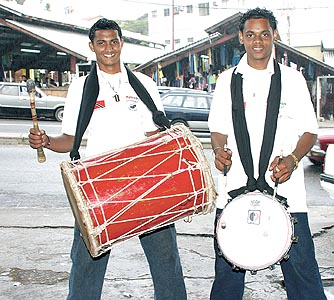

Tassa is a form of kettle drum. Tassa drums are widespread all over India,
originated in Trinidad and Tobago. Typically, one or more tassa drums are played
together with a heavy bass drum called dhol, perhaps along with brass cymbals or
a metal shaker.
Tassa-dhol ensembles of three to five players are especially
common in street processions, whether associated with Hindu weddings, political
rallies, or Muslim Muharram commemorations. In Maharashtra, ensembles of several
dozen drummers compete in festivities honoring the deity Ganesh.
Drummers in
these ensembles are often amateurs, or specialists in other drum traditions.
Brought by indentured workers to the Caribbean in the 19th century, tassa
ensembles have flourished with great dynamism in Trinidad, where they were used
in the Hindu Phagwah, Muslim Hosay festival, and also in Florida, Guyana, New
York, Texas, New Jersey, Canada and various other places where Indo-Caribbean
communities are found.
Construction:
Traditionally, the tassa is made by tightly covering a clay shell with goat
skin; early tassa were covered in monkey skin as well.
When ready to play, the
goat skin is heated by aid of a fire to tighten the head, making the pitch
higher. This process is called "standing it up". In this way, the pitch can stay
high for 20–30 minutes.
Now tassa drums are even made by cutting an empty
coolant tank in half and attaching a synthetic drum skin to the top of it with
nuts and bolts, welding it shut.
Synthetic drums do last longer and do not have
to be adjusted as frequently. Although synthetic drums last longer, they deviate
from the long-standing tradition of clay and goatskin and do not sound as well.

Bass drums are constructed from a single piece of tree trunk, usually mango or
cedar, but older, larger drums were made of the dense but light weight
cottonwood tree which is rarely found today.
The hollowed out trunk is covered
on both sides by goat skins which are pulled tightly with rope. Different
amounts of "massala" is placed in the insides of the skin to create a lower
frequency resonation on the "bass" side hit with a stick, and a higher frequency
resonation on the more "treble" side hit with the hand. The deep, booming sounds
of bass drums can be heard from long distances.
Playing tassa:
When played in a tassa group, one tassa is the "cutter" and the other is the
"fulley" or "fuller", as their role is to make the rhythm or "taal" sound more
full.
The fulley plays a steady rhythm and at a constant speed while the cutter
plays the more intricate rhythms and improvises. A large bass drum, usually made
from a mango tree trunk, is also played filling in a deep sound and in addition
there is someone with jhanj or jhaal ( Hindi for brass "cymbals") playing in the
group also.
Tassa drumming can usually be found at a various Indo-Cultural
events such as Hosay, Hindu weddings, or even parties and certain clubs.
The rhythms are quite complex and each have many variations. Some basic hands
are tikora, wedding hand, nagaara, chutney, dingolay, soca, chaubola, kalinda,
khemta, bhajan, tikora wedding hand, steel pan, wedding tikora, thumri.
Hosay
(Muharram) festival rhythms include saada mahaatam, chalta mahaatam, teen
choppa, and nabi sarwar.
The tassa drums are played with sticks made from wild cane (called "chob", Hindi
for cane sticks) or fiberglass.
The sticks can either have very tightly wound
masking tape at the top or the sap from a balata tree wound into a ball can form
the head of a stick.
When played, these pliant sticks are struck on the head of
the drum and accomplish a unique sound because the flexibility of the stick is
responsible for the roll rather than the regressive bouncing action of the head
of the stick.